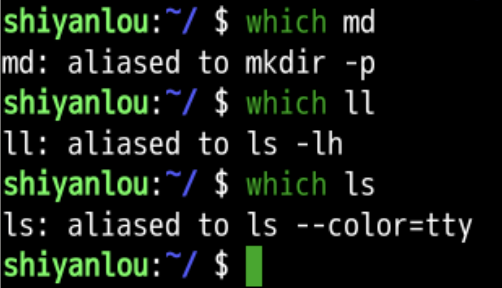
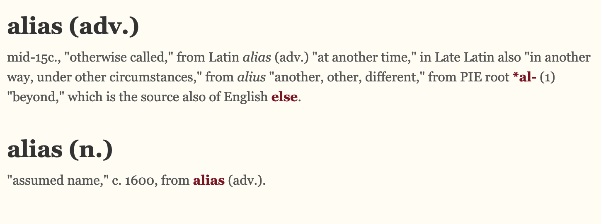
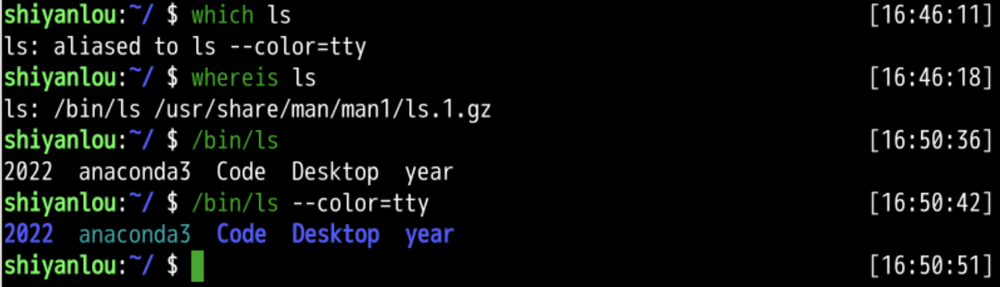
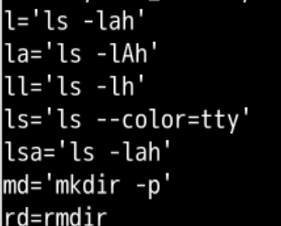
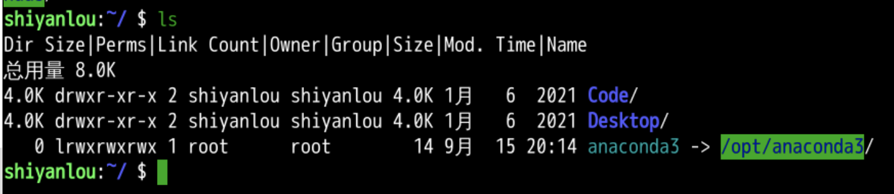
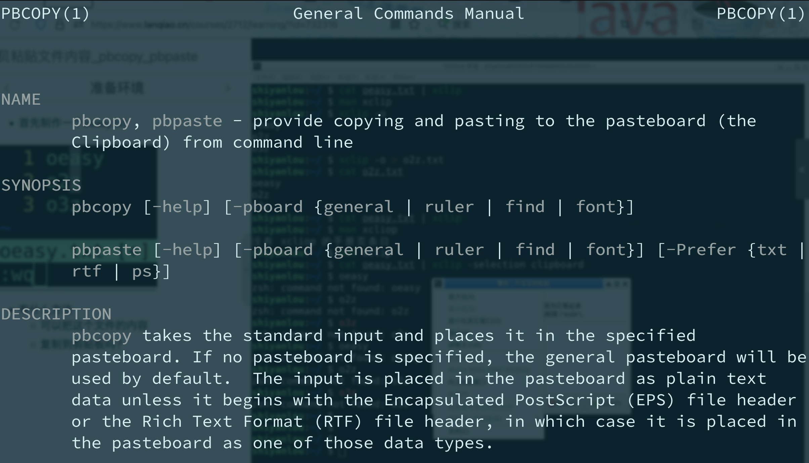
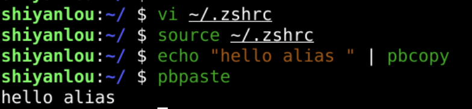

alias

alias ls='echo "Dir Size|Perms|Link Count|Owner|Group|Size|Mod.Time|Name"; ls -Fhls --color --group-directories-first'


alias pbcopy='xclip -selection clipboard'
alias pbpaste='xclip -selection clipboard -o'
